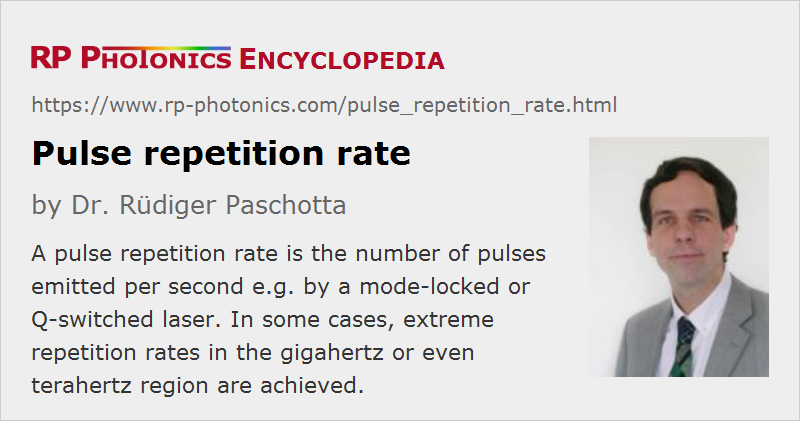

Pulse Repetition Rate
Acronym: PRF
Definition: the number of pulses emitted per second e.g. by a mode-locked or Q-switched laser
Alternative term: pulse repetition frequency
German: Pulsrepetitionsrate
Categories: optical metrology, light pulses
Formula symbol: frep
Units: Hz
How to cite the article; suggest additional literature
Author: Dr. Rüdiger Paschotta
The pulse repetition rate (or pulse repetition frequency) frep of a regular train of pulses is defined as the number of emitted pulses per second, or the inverse temporal pulse spacing.
Depending on the technique of pulse generation, typical pulse repetition rates can be in different parameter regions:
- Typical mode-locked solid-state lasers emit with pulse repetition rates between 50 MHz and a few gigahertz, but in extreme cases < 10 MHz or > 100 GHz are possible.
- Q switching of solid-state lasers typically allows repetition rates from below 1 Hz to the order of 100 kHz.
- Gain switching of semiconductor lasers can provide repetition rates from below 1 Hz to many megahertz.
- Attosecond pulse trains of finite length can be generated via high harmonic generation with repetition rates of hundreds of terahertz.
If a pulse train is regular and the pulses are mutually coherent, the optical spectrum of the pulse train is a frequency comb, where the spacing of the lines is determined by the pulse repetition rate.
The deviation from perfect periodicity of the optical power is called timing jitter.
Questions and Comments from Users
Here you can submit questions and comments. As far as they get accepted by the author, they will appear above this paragraph together with the author’s answer. The author will decide on acceptance based on certain criteria. Essentially, the issue must be of sufficiently broad interest.
Please do not enter personal data here; we would otherwise delete it soon. (See also our privacy declaration.) If you wish to receive personal feedback or consultancy from the author, please contact him e.g. via e-mail.
By submitting the information, you give your consent to the potential publication of your inputs on our website according to our rules. (If you later retract your consent, we will delete those inputs.) As your inputs are first reviewed by the author, they may be published with some delay.
See also: pulse generation, pulses, frequency combs, timing jitter
and other articles in the categories optical metrology, light pulses
|  |
If you like this page, please share the link with your friends and colleagues, e.g. via social media:
These sharing buttons are implemented in a privacy-friendly way!